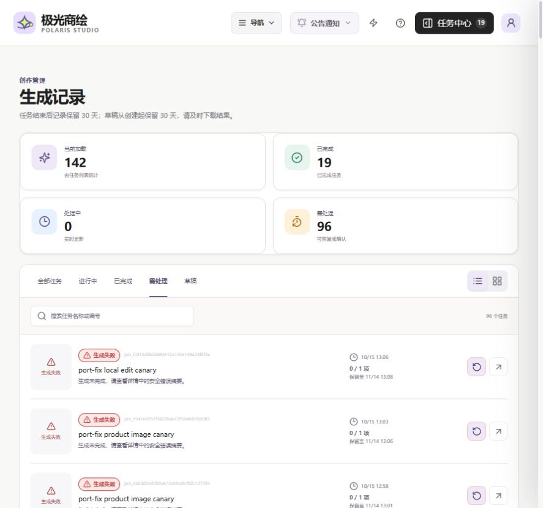
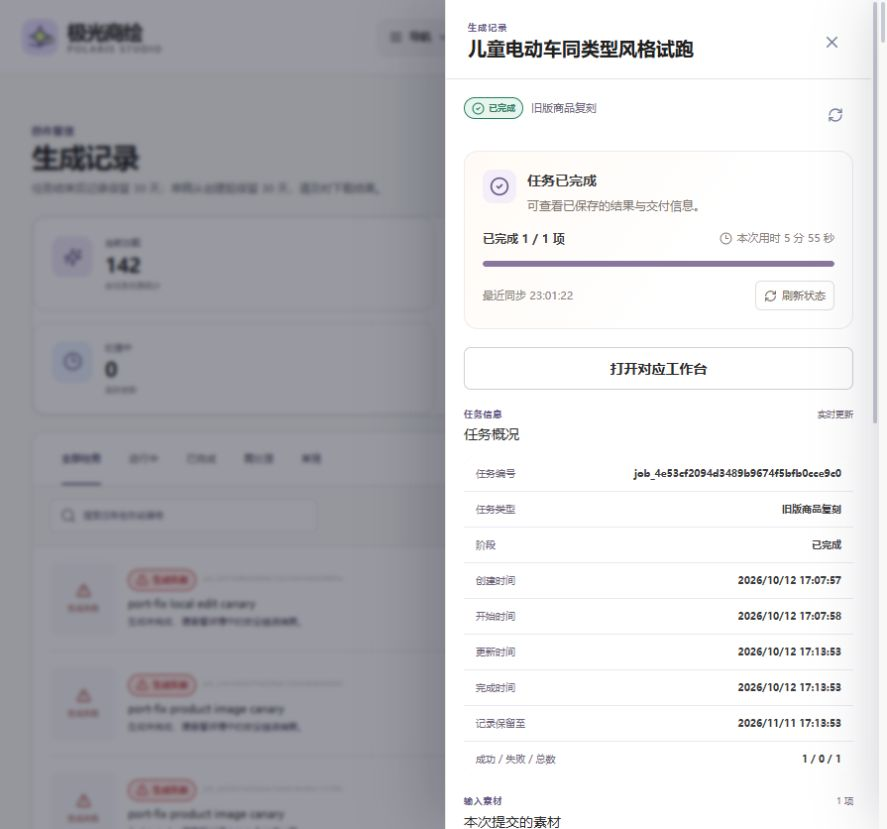
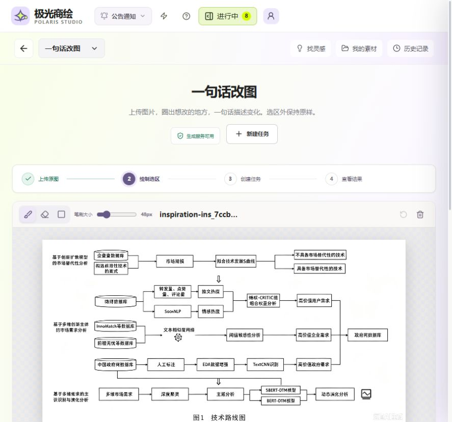

2026-10-26 · 本地分支 codex/polaris-frontend-refresh-20261026
极光商绘业务接入审计
已修复确认的入口、历史读取和状态展示断点。2026-10-27 已按用户确认恢复原有 3 项真实生成开关；全部 skill、agent 和执行实现保持原样，876 个受保护源文件哈希一致。收费出图与线上登录尚未完成端到端实测。
27原网站灵感案例
142 / 142保留期内任务详情可读
280 / 280素材原图可读取
27 / 27前端路由返回 HTML 200
查看原站灵感 · 查看素材中心 · 查看完整历史 · 结构化验收记录
为什么会出现空白和功能未接通
灵感空白首先来自本地前端没有连上业务后端；服务恢复后，又发现本地案例库与原网站公开案例不是同一版本。之后已按原网站公开接口恢复 27 个案例，原始指令、图片和分类保持一致。
本轮进一步对照迁移前提交 447d563，确认素材按钮无动作、局部改图案例被禁用、旧任务类型读取报错等缺陷在原目标代码中已经存在。先前验收只检查代码是否保留，没有把真实数据和入口逐项走通，所以把这些旧断点一起保留了下来。HTTP 200、构建通过和接口文件存在，都不足以证明用户可以完成业务操作。
本轮修复
| 断点 | 现在的行为 | 验证 |
|---|
| 6 条旧版 product_replica 任务让历史列表返回 500 | 只读响应兼容旧类型，保留原任务与单张结果下载；旧执行器不进入新建任务类型，重试与复制明确返回只读错误。 | 真实列表、全部详情；测试验证旧结果下载与禁止误执行。 |
| 历史只读前 100 条；任务入口与控制台统计仅看少量近期记录 | 按游标读取所有保留期内任务，与现有复刻记录合并。142 条均可见；请求失败显示错误和重新加载。 | 跨页与异常测试、浏览器真实列表。 |
| 等待整组确认的任务未进入“需处理” | 筛选和完整统计包含 awaiting_final_review；当前 6 条均显示，切换筛选不改变全局统计。 | 浏览器筛选、任务中心统计。 |
| 素材中心两个创作按钮没有动作 | 带入所选原素材 ID；局部改图支持 1 张，详情图支持 1–8 张。校验工作区和素材就绪状态，已有任务的输入优先。 | 单图进入画布；两图进入详情表单、保持顺序并可移除；跨工作区和数量边界测试。 |
| “改语言语种”局部改图案例加载后不能继续 | 直接进入现有蒙版工作台，带入原图和原始指令，保留 inspiration_case_id；用户画选区并明确提交后才创建任务。 | 原指令 173 字符逐字一致，两个画布已挂载；未提交生成。 |
| 单图或旧版任务显示后端不支持的整套 ZIP 下载 | 按任务类型、状态和交付完整性显示打包按钮。单张下载保留，亚马逊已保存图片但审核基础设施失败的例外保留。 | 支持类型与交付状态测试、旧任务详情点验。 |
| 控制台链接不带任务上下文，导入素材被误标为生成产物 | 近期任务进入对应工作台并携带 jobId；上传、生成、导入和派生素材分别显示来源。 | 页面、路由解析和 TypeScript 检查。 |
| 帮助搜索只处理鼠标按下 | 使用标准点击事件支持键盘 Enter；共用帮助组件的完整指南链接也已补齐。 | 浏览器键盘选择与指南弹窗。 |
原运行配置核对结果（2026-10-27 已恢复）
用户已确认原网站三项都可用。现已只恢复这三个运行开关，API、worker、dispatcher 均报告 provider 可用；其他配置、镜像及全部 skill、agent 源码未变。查看恢复与完整性证据 · 77 项路由与提交检查日志。以下保留 10 月 26 日的原始发现：
本地运行时明确返回 REAL_PROVIDER_NOT_REGISTERED：模特换姿势、亚马逊套图、跨境详情图。相关页面和请求代码存在，但现有本地配置关闭了真实生成。已向用户询问原站是否启用；本轮保持原开关、凭据和运行配置，未自行打开。
其余 6 类核心生成能力在运行时报告为 provider 模式。此状态说明服务已注册，不能替代真实收费出图验收。当前账户检查使用开发模式，线上外部登录未列为通过项。
验证与边界
- 214 项前端单元与契约检查通过；93 项后端 API、旧任务和工作台路由测试通过。
- TypeScript、修改范围内 ESLint、后端 Ruff 和最新生产构建通过。生产构建在进程内关闭本地预览并使用外部鉴权，环境文件未改。
- 27 个页面路由返回 HTML 200；健康检查、账户、工作区、公告、灵感目录和复刻记录接口均返回 200。
- 142 条保留期内任务详情、280 张素材原图全部可读。280 张包含本次点验局部改图案例时正常产生的 1 张工作区副本；任务总数保持 142。
- 原有鉴权、生成参数、幂等重试和付费审核授权测试保留。历史失败任务的状态保持原样，本轮未重新执行它们。
- 未提交收费生成、未验证新扣费、未向原网站写入，未推送或部署。
- 独立生产服务器浏览器测试之前遇到 Windows 临时文件 EBUSY；本轮未重跑，不计入通过结果。真实本地浏览器点验使用 3000 端口。
214 项前端检查日志 · 生产构建日志 · 完整检查记录
浏览器点验
待确认任务进入“需处理”：

旧版已完成任务可恢复查看：

原站语言修改案例进入现有蒙版工作台：

本地可审阅提交
4ae92b1：旧版任务历史只读兼容。
c292906：素材带入、完整历史、案例接入和入口修复。
原有未跟踪的 backend/work/ 已保留并排除在提交外。本地服务继续运行于 localhost:3000。